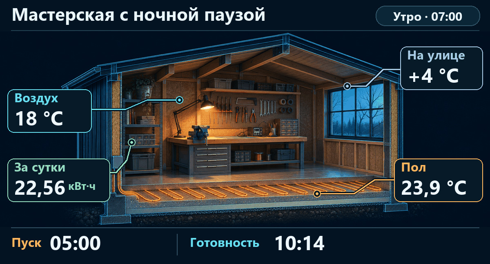
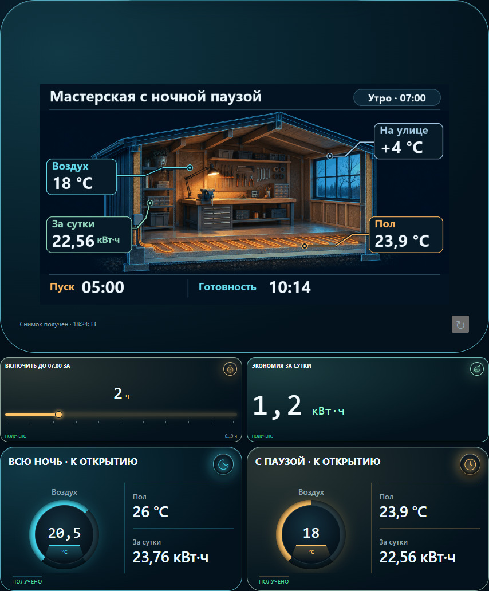

I switched off the underfloor heating overnight. How much energy did it save?
The workshop closes at 10 pm and opens nine hours later. Should I keep the floor warm or heat it again before opening? The heater draws 2.4 kW during warm-up. That reading alone tells me very little about the energy bill for the day.
To try it out, I built two identical virtual workshops in ARAAMA. It stays at 4 °C outside. One workshop holds its floor at 26 °C all night. In the other, I switch off the heating and choose when it comes back on. The cutaway puts the air reading by the workbench, the floor reading by the heating cable and the outdoor reading by the window. The meter on the wall totals a full day.

With a 5 am restart the meter saved 1.20 kWh over 24 hours. But at opening time the floor was at 23.9 °C and the air was only 18 °C. I would still need my jacket. The room first met both of my targets, 20 °C in the air and 25.5 °C underfoot, at 10:14.
Moving the restart to 2:30 am brought the air to 20.2 °C and the floor to 26 °C by seven. The daily totals were 23.23 kWh with the overnight break and 23.76 kWh with continuous heating. That leaves 0.53 kWh saved while opening on time. The meter answered the energy question. The thermometer caught the problem with the 5 am schedule.
Try moving the restart half an hour later, to 3 am. How much more energy do you save, and could you open the workshop at seven? The download includes the Android dashboard and a Python simulator.
Download the dashboard and simulator (ZIP) · ARAAMA 0.1.10 (APK)
Run the workshop
- Download the ZIP to a computer running Python 3.9 or newer. Extract it into a folder and leave the inner scene-art.zip intact. On Windows, run Start.cmd. On macOS or Linux, run
python3 simulator.py --lanin that folder. The simulator uses the Python standard library. - Put the Android device on the same local network. In its browser open the address printed next to
Open on tabletand save Workshop-ARAAMA.json. For a particular layout replace /panel.json with /phone.json or /tablet.json. - In ARAAMA 0.1.10 go to Settings → Projects → Open projects → Open file · ZIP / JSON. Select the downloaded JSON and switch to Run. Keep the simulator running on the computer.
- The supplied dashboard has Russian card labels. On the opening screen find the slider «Включить до 07:00 за» (hours of preheating before 07:00). Set 2 hours for a 05:00 restart, then 4.5 hours for 02:30. Compare the two temperatures and the daily energy. Give the illustration five seconds to refresh. If the readings stay blank, open the
View readingsaddress on the tablet and check that the simulator returns JSON.


Check your result
Restart / both targets reached / daily energy
03:00 → 07:03 · 23.11 kWh
This is a model of two identical rooms with electric heating capped at 2.4 kW. Each run covers 22:00 to 22:00 the next day. The two rooms finish within 0.01 °C of each other. A real floor will respond differently depending on its construction, insulation and the weather.
On the outlets screen, switch on the dryer and compare current, voltage, power and accumulated energy for two loads. On the climate and lighting screen, move the floor setpoint slider and change when the work light switches off.